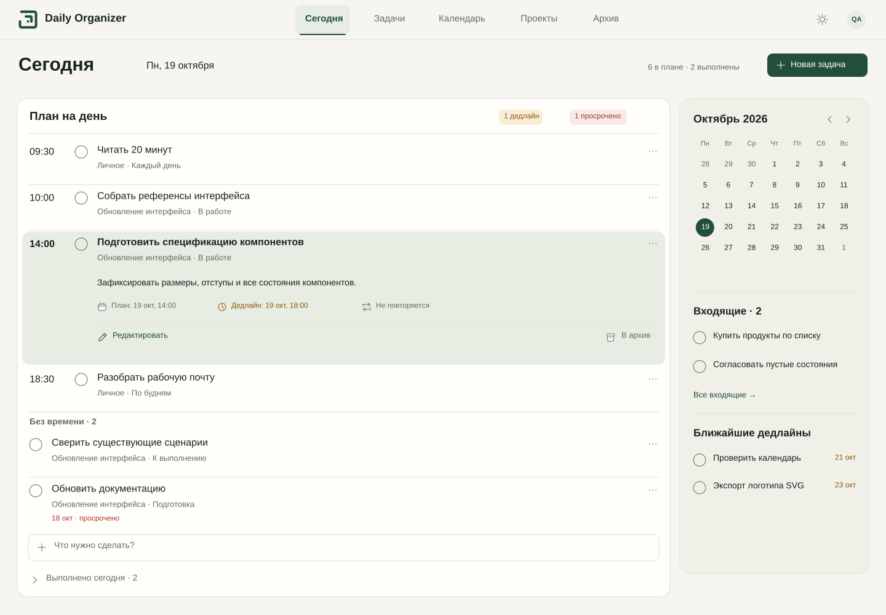

← Альбом«Сегодня»: сверка с утверждённым экраном
Слева — исходное изображение пользователя. Справа — векторное восстановление в том же размере 1586 × 992. Сохранены сетка, содержание, иерархия и ширина колонок. Рисунок шрифта и отдельные иконки немного отличаются: это восстановление по растровому референсу, а не исходный дизайн-файл.
Утверждённый эталон Восстановленный макет · светлая тема
Восстановленный макет · светлая тема
Векторный светлый экран в натуральном размере, с прокруткой